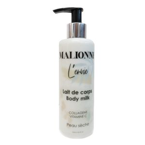

L'huile de coco dans son contenu; Tout en aidant à hydrater et nourrir les lèvres, sa texture douce offre un
confort de libération facile. Avec une pigmentation maximale des couleurs, il offre une couverture parfaite
sur vos lèvres sans entrer dans les ridules. Il propose 16 alternatives de couleurs tendance avec sa formule
mate en poudre adaptée au maquillage de jour comme de nuit.
Il a été testé par voie dermatologiqu
Rouge a levre instyle mat topface 005 pt155
15.000 TND TTC
L'huile de coco dans son contenu; Tout en aidant à hydrater et nourrir les lèvres, sa texture douce offre un
confort de libération facile. Avec une pigmentation maximale des couleurs, il offre une couverture parfaite
sur vos lèvres sans entrer dans les ridules. Il propose 16 alternatives de couleurs tendance avec sa formule
mate en poudre adaptée au maquillage de jour comme de nuit.
Il a été testé par voie dermatologique.
M-use palette mat sweet emotion -bellaoggi
35.000 TND TTC
M-use est une palette polyvalente composée de 5 gousses de fard à paupières en métal mat 1 et 2 en satin. Ses
poudres peuvent être utilisées individuellement mélangées combinées et en couches à la fois pour mélanger et
pour mettre en évidence et souligner les yeux. Les looks sont réalisables à l'infini!
Les deux poudres Mat sont d'un velours raffiné, leur texture douce et soyeuse donne des nuances
incroyablement intenses et vibrantes.Le
fard à paupières Metal toujours positionné au centre de la palette est parfait pour un look magnétique avec
un effet métallique et extrêmement confortable sur la peau. Grâce à sa formulation spéciale, il peut être
utilisé seul ou en couche de finition sur d'autres fards à paupières. Sa texture légère, son film mince et
son effet longue durée lui donnent un look incroyable.
Les deux poudres de satin avec une texture extrêmement douce sont incroyablement douces et fluides; leur
pigmentation est particulièrement riche et la finition modulaire.
La palette disponible en quatre teintes différentes - Nude Temptation Naiked Illusion Sweet Emotion et Dark
Obsession vous permet de vous amuser en jouant avec les couleurs. Ses poudres aux teintes sophistiquées
peuvent être appliquées à sec ou au pinceau humide pour une plus grande intensité.
Visage
Aspirateur de points noirs xn-8030
49,000 TND TTC
Résoudre le problème: pores grossiers, peau rugueuse, peau foncée, exfolier la peau morte, les points noirs
et les pores de la peau, le nez de saleté et raffermir et améliorer l'élasticité de la peau.
Conception imperméable professionnelle, tête de bouche facile à nettoyer. Rechargeable avec lumière .
Forte aspiration, la force d'aspiration est réglable, efficacement pour aspirer le nez comédons et l'acné.
Prévenir les dommages d'aspiration à la peau, riche en une variété de vitamines et de protéines, pour
apporter à la peau les nutriments nécessaires
Comment utiliser:
1. Par temps froid et sec, n'utilisez pas la machine uniquement. Suggère que vous l'utilisiez après avoir
pris un bain chaud ou mis une serviette chaude
sur votre visage pendant au moins 10 minutes, la meilleure façon de l'utiliser après l'utilisation d'un
vaporisateur à chaud
2. Ensuite, utilisez un morceau de coton pour tremper le liquide de tête noire obtenu sur l'endroit des
points noirs.
3.Placez une petite tête d'aspiration ronde montée sur l'hôte.Appuyez sur le bouton d'alimentation pour
allumer l'instrument et appuyez sur "Plus" pour
ajuster l'intensité de l'aspiration.
4. Le long de l'emplacement du point noir de haut en bas se déplacer lentement, pas si rester.Outre facile
de rendre la peau rouge et
violet.
5. Après avoir sucé le point noir, adoptez la compresse froide de serviette de glace et employez les
produits hydratants opportuns pour aider à rétrécir le
pores, soulager l'inconfort.
spécification
Filorga le Masque de Nuit Multi-correcteur Suprême à pénétration rapide qui s’utilise comme une crème de nuit
– Effet radical
SPÉCIAL NUITS COURTES - PEAUX FATIGUÉES, STRESSÉES.
UN MASQUE DE NUIT MULTI-CORRECTEUR CONCENTRE EN NCEF POUR UNE PEAU VISIBLEMENT PLUS JEUNE AU REVEIL.
[Rides - Fermeté - Éclat]
Le masque nuit à effet récupérateur cutané intense
RÉNOVATION INTENSIVE DE LA QUALITÉ DE PEAU [RÉGÉNÉRATION ACTIVÉE]
Une formule au NCEF, complexe polyrevitalisant unique mis au point par les Laboratoires FILORGA dont 50
ingrédients sont intégrés pour la première fois dans des concentrations comparables à celles utilisées en
méso-injection(1).
RÉCUPÉRATION CUTANÉE NOCTURNE [RIDES + FERMETÉ + ÉCLAT]
Le Melatonin’CX, puissant défatiguant cutané, agit pendant la nuit pour des traits reposés tandis qu’un
booster [acide hyaluronique + collagène] repulpe la peau.
En parallèle, un détoxifiant naturel libère la peau du stress oxydatif et des polluants pour révéler un
teint rayonnant au réveil.
Hyséac soin global boutons, points noirs, brillances 40ml -uriage
34,990 TND TTC
Ce soin global « tout en un » favorise l’élimination des défauts cutanés (boutons, points noirs, brillances)
et laisse la peau nette et matifiée.
Limite les imperfections
Il limite les boutons et les points noirs grâce à un complexe d’actifs performants et à l’Eau Thermale
d’Uriage.
Affine le grain de peau
Il lisse significativement le grain de peau et resserre les pores.
Matifie
Il limite l’excès de sébum, source de nouvelles imperfections grâce à l’extrait de Licorice.
Corps

Lait de corps 250ml - malionne
Lait De Corps - Malionne - 250Ml-Peau nourrie de façon visible et durable. Laisse la peau douce et hydratée,
Tonifie et raffermit les
tissus pour une peau plus jeune Illumine le teint. Calme, apaise et réconforte la peau Fournit une
hydratation intense et durable Absorbe
rapidement et facilement-Vous cherchez un soin qui nourrit intensément votre peau ? Essayez le Lait de corps
nourrissant de MALIONNE
pour répondre aux besoins spécifiques de votre peau sèche. (S A N S S U L F A T E , S A N S S I L I C O N E
, S A N S P A R A B É N E)-Eau
(Acqua),Sesamum Indicum (Sesame) Seed Oil,Butyrospermum Parkii (Shea) Butter***,huile d'amande douce (
Prunus amygdalus dulcis
oil),Olea Europaea (Olive) Fruit Oil***,Rosa Seed (rose de damas )Oil ,GMSE( Glyceryl Stearate SE )
,Chamomilla Recutita
Flower(Camomille) Extract,Xanthan Gum(Methy-4-isothiazolin-3- one),Extrait de riz( Oriza rice starch) ,Mel
(Miel), huile de pépins de raisin
(vitis vinifira seed oil),cire d’abeille (cera alba),Collagéne(Collagen),Vitamine C (Acide ascorbique),
Fragrance (parfum)Limonene-Linalool-
Benzyl Benzoate-Benzyl Salicylate-Geraniol-Citral-Eugenol*
Gel surgras liquide dermatologique visage & corps peaux sensibles 500ml -uriage
45,778 TND TTC
Uriage Gel Surgras Dermatologique 500 ml est un gel à la base lavante douce, sans savon, qui élimine les
impuretés de la peau sans agresser.
Ce gel surgras nettoie et améliore efficacement le confort de votre peau tout en respectant le film
hydrolipidique. La peau est ainsi parfaitement nettoyée, hydratée et apaisée.
Ce soin peut s'utiliser pour toute la famille. S'utilise pour le visage et le corps.
Hypoallergénique. Testé ophtalmologiquement.
CONSEIL D'UTILISATION
Sous la douche, appliquer sur peau mouillée. Faire mousser avec de l'eau puis rincer.
Indication : Hygiène de la peau
Capillaire
Sérum capillaire delia cosmetics cheveux endommagées 55 ml
13,888 TND TTC
Le soin sans rinçage Delia Cosmetics Cameleo BB s’applique sur vos cheveux fraîchement lavés, il leur apporte
tout ce dont ils ont besoin.
Le produit :
augmente la densité et la force des cheveux
assure des effets régénérateurs
offre une souplesse très soyeuse
Mode d’emploi :
Appliquez sur les cheveux fraîchement lavés et séchés avec une serviette. Ne rincez pas. Peignez.
Cofrret seche cheveux + sac a main + brosse - babyliss
210,000 TND TTC
2200 W, 2 vitesses, 3 températures, Fonction air froid, Concentrateur d'air, Anneau de suspension, Noir,
Livré avec un sac à mains + brosse + 2 pinces requin + 2 pinces coiffeur
.jpg)